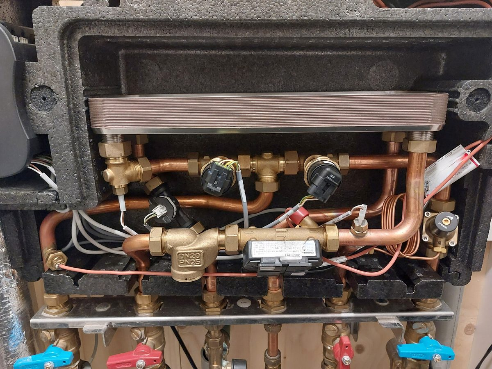

네덜란드 위트레흐트주, 공공 열 회사 'Uwarmte' 설립 추진…1,930만 유로 출자 요청, 10년간 약 1만5,000가구 연결

주 20%·배전사 자회사 40%·국영 열투자사 40% 공동 지배 구조…12월 16일 주의회 표결 앞둬, 주민 열 공동체와 "경쟁 아닌 분담" 약속
네덜란드 위트레흐트주 집행부가 지역난방망을 직접 깔 공공 열 회사 'Uwarmte'를 세우겠다며 주의회에 1,930만 유로를 따로 떼어 달라고 요청했다. 회사는 배전사 스테딘(Stedin)의 자회사 넷베르더(Netverder), 열 회사 설립에 함께 돈을 대려고 만든 국영 '국가 열 지분회사(NDW)'와 함께 세우며, 주가 이 돈으로 지분 20%를 갖고 넷베르더와 NDW가 각각 40%를 가져 어느 한쪽도 혼자 결정할 수 없는 구조다. 앞으로 10년간 주택 약 1만5,000가구를 연결하고 장기적으로 약 11만 가구를 잇는 것이 목표로, 늦어도 2050년 기후중립을 이뤄야 하는 주는 지금 있는 위트레흐트 열 지원회사(UWO)가 조언에 머물러 망을 직접 깔 회사가 필요하다는 요구가 지자체들에서 나왔다고 설명했다. 3,000곳이 연결된 베이넨달은 1만7,000곳으로 늘리려 하고 있으며, 새 열법에 따라 장기적으로 공공 소유로 넘어가야 하는 기존 민간 열망은 Uwarmte가 사들이지 않고 새 망에 집중한다. 지역 주민 주도 사업이 밀려날 수 있다는 우려에 하위브 판에선(Huib van Essen) 집행위원은 지자체에 먼저 지역 주도 사업이 있는지 묻겠다며 "경쟁하려는 것이 아니다"라고 말했고, 열 공동체·폐기물 처리 공기업 HVC·Uwarmte를 함께 가야 할 세 축으로 꼽았다. 주의회는 12월 16일 이 안을 표결하며, 통과되면 회사는 내년에 세워지고 열망 방식은 결국 각 지자체가 정한다.
시민에너지 관점
주 20%, 배전사 자회사 40%, 국영 열투자사 40%로 지분을 나눠 어느 한쪽도 독단할 수 없게 한 설계, 그리고 조언만 하던 기관을 망을 직접 까는 회사로 키우려는 구상은 작은 지자체가 혼자 감당하기 어려운 열 기반시설을 광역이 받쳐 주는 방식으로 눈여겨볼 만하다. 광역 공기업이 들어오면 주민이 먼저 꾸린 열 공동체가 밀려난다는 우려가 실제로 나왔지만, 지자체마다 지역 주도 사업부터 확인하는 절차를 둔다면 공공 회사는 경쟁자가 아니라 주민 사업이 닿지 못하는 곳을 메우는 짝이 될 수 있다. 덴마크에서 지역난방을 오랫동안 소비자 협동조합과 지자체 회사가 맡아 온 것처럼, 열망은 동네마다 하나뿐인 기반시설이어서 이용하는 주민이 주인일 때 요금과 투자가 주민 이익에 맞춰진다. 국내 지자체도 공공 열·에너지 회사를 구상할 때 주민 협동조합을 먼저 확인하는 순서와 주민 지분의 자리를 정관과 조례에 처음부터 적어 넣어야 한다.
출처: RTV Utrecht 2026-10-29 Reinder Smit 원문 보기
オランダ・ユトレヒト州、公共熱供給会社「Uwarmte」設立へ…1,930万ユーロの出資を要請、10年で約1万5,000戸を接続
州20%・配電会社子会社40%・国営熱投資会社40%の共同支配構造…12月16日の州議会採決を前に、住民の熱コミュニティと「競争ではなく分担」を約束
オランダ・ユトレヒト州の執行部が、地域熱供給網を自ら敷設する公共熱供給会社「Uwarmte」を設立するとして、州議会に1,930万ユーロを確保するよう求めた。会社は配電会社ステディン（Stedin）の子会社ネットフェルダー（Netverder）と、熱供給会社の設立に共同出資するためにつくられた国営の「国家熱出資会社（NDW）」とともに設立し、州がこの資金で20%、ネットフェルダーとNDWがそれぞれ40%を持つことで、どこも単独では決められない仕組みにした。今後10年で住宅約1万5,000戸を接続し、長期的には約11万戸をつなぐのが目標で、遅くとも2050年に気候中立を達成しなければならない州は、既存のユトレヒト熱支援会社（UWO）が助言にとどまっており、網を自ら敷設できる会社が必要だという声が自治体から上がっていたと説明した。現在3,000カ所が接続されているフェーネンダールは1万7,000カ所への拡大を目指しており、新たな熱法により長期的に公共所有へ移すべき既存の民間熱供給網については、Uwarmteは買い取らず新しい網に集中する。地域の住民主導事業が押し出されるのではとの懸念に対し、フイブ・ファン・エッセン（Huib van Essen）執行委員は、まず自治体に地域主導の事業があるかを尋ねるとして「競争するつもりはない」と述べ、熱コミュニティ、廃棄物処理公社HVC、Uwarmteをともに進むべき三本柱に挙げた。州議会は12月16日にこの案を採決し、可決されれば会社は来年設立され、熱供給網の方式は最終的に各自治体が決める。
市民エネルギーの視点
州20%、配電会社子会社40%、国営熱投資会社40%と持ち分を分けてどこも独断できないようにした設計と、助言だけをしていた機関を網を自ら敷設する会社へと育てようとする構想は、小さな自治体が単独では担いきれない熱インフラを広域行政が支える方法として注目に値する。広域の公営企業が入ると住民が先に立ち上げた熱コミュニティが押し出されるとの懸念は実際に出ているが、自治体ごとに地域主導の事業をまず確認する手続きを置けば、公共会社は競争相手ではなく、住民事業が届かない所を埋める相棒になりうる。デンマークで地域熱供給を長く消費者協同組合と自治体の会社が担ってきたように、熱供給網は地域に一つしかないインフラであり、利用する住民が持ち主であってこそ料金と投資が住民の利益に沿う。韓国の自治体も公共の熱・エネルギー会社を構想する際には、住民協同組合をまず確認する順序と住民持ち分の位置づけを、定款と条例に最初から書き込むべきだ。
出典: RTVユトレヒト 2026-10-29 レインダー・スミット 原文を読む
荷兰乌得勒支省推动成立公共供热公司“Uwarmte”…申请出资1,930万欧元，10年内连接约1万5,000户
省20%、配电公司子公司40%、国有热力投资公司40%共同治理…12月16日省议会表决在即，承诺与居民热力社区“分工而非竞争”
荷兰乌得勒支省执行部门提出要成立一家自行铺设区域供热管网的公共供热公司“Uwarmte”，并请求省议会为此预留1,930万欧元。公司将与配电公司斯特丁（Stedin）的子公司Netverder，以及为共同出资设立供热公司而成立的国有“国家热力参股公司（NDW）”共同组建，省以这笔资金持股20%，Netverder和NDW各持40%，任何一方都无法单独做决定。目标是未来10年连接约1万5,000户住宅，长期连接约11万户；必须最迟在2050年实现气候中和的乌得勒支省表示，现有的乌得勒支供热支持公司（UWO）只提供咨询，多个地方政府提出需要一家能直接铺设管网的公司。目前已有3,000处连接的费嫩达尔希望扩大到1万7,000处；按照新的供热法，现有私营供热管网长期须转为公有，但Uwarmte不会收购这些管网，而是专注于新管网。针对地方居民主导项目可能被挤出的担忧，省执行委员许布·范埃森（Huib van Essen）表示会先询问各地方政府是否已有本地主导项目，并说“我们不是要竞争”，他把热力社区、废弃物处理公营企业HVC和Uwarmte列为应携手推进的三方。省议会将于12月16日表决该方案，如获通过，公司将于明年成立，供热管网采用何种方式最终由各地方政府决定。
市民能源视角
按省20%、配电公司子公司40%、国有热力投资公司40%分配股权，使任何一方都无法独断，并打算把只提供咨询的机构扩展为直接铺设管网的公司，这种由广域政府支撑小型地方政府难以独力承担的供热基础设施的做法值得关注。确实有人担心广域公营企业进入后，居民先行组建的热力社区会被挤出，但如果在每个地方都设置先确认本地主导项目的程序，公共公司就不是竞争者，而可以成为填补居民项目够不到之处的伙伴。正如丹麦的区域供热长期由消费者合作社和地方政府公司承担那样，供热管网是每个社区只有一套的基础设施，只有使用它的居民成为主人，价格和投资才会符合居民利益。韩国地方政府在构想公共热力、能源公司时，也应从一开始就把先确认居民合作社的程序和居民持股的位置写进章程和条例。
来源: 乌得勒支广播电视台（RTV Utrecht） 2026-10-29 雷因德·斯米特（Reinder Smit） 查看原文
Dutch province of Utrecht moves to set up public heat company Uwarmte, seeks EUR 19.3 million to connect about 15,000 homes over 10 years
Shares split 20% province, 40% grid operator subsidiary and 40% state heat investor so no party decides alone; provincial council votes on 16 December, and local heat communities are promised cooperation, not competition
The executive of the Dutch province of Utrecht has asked the provincial council to set aside 19.3 million euros to establish Uwarmte, a public heat company that would build district heating networks itself. The company would be set up with Netverder, a subsidiary of grid operator Stedin, and the National Heat Participation Company (NDW), a state-owned firm created to co-finance new heat companies; the province would take a 20% stake for its money and Netverder and NDW 40% each, so that no single party can decide alone. The aim is to connect about 15,000 homes over the next 10 years and about 110,000 in the long run, and the province, which must be climate neutral by 2050 at the latest, says municipalities had called for a company that can lay networks rather than only advise, as the existing Utrecht Heat Support Company (UWO) does. Veenendaal, which now has 3,000 connections, wants to reach 17,000, and while existing private heat networks must eventually pass into public hands under the new heat law, Uwarmte will not buy them up but will focus on new networks. Responding to concerns that local resident-led initiatives could be pushed aside, provincial executive Huib van Essen said the province will first ask municipalities whether a local initiative already exists, stressing that it is "not out for a competition," and named heat communities, the public waste company HVC and Uwarmte as the three parties that must work together. The provincial council votes on the plan on 16 December; if it passes, the company would be founded next year, and each municipality will ultimately decide how its heat networks are organised.
Citizen Energy View
Splitting ownership 20% to the province, 40% to a grid subsidiary and 40% to a state heat investor so that no one can act alone, and planning to turn an advisory body into a company that actually builds networks, is a model worth watching for how a region can carry heat infrastructure that small municipalities cannot manage on their own. The fear that a regional public company will crowd out heat communities that residents set up first is real, but a rule that each municipality is asked first about local initiatives can make the public company a partner that fills the gaps residents cannot reach rather than a competitor. As in Denmark, where district heating has long been run by consumer cooperatives and municipal companies, a heat network is the one such piece of infrastructure a neighbourhood has, and prices and investment follow residents' interests only when the people who use it own it. Korean local governments planning public heat or energy companies should write a local-cooperatives-first procedure and a place for resident shareholding into articles of association and ordinances from the start.
Source: RTV Utrecht 2026-10-29 Reinder Smit Read the original